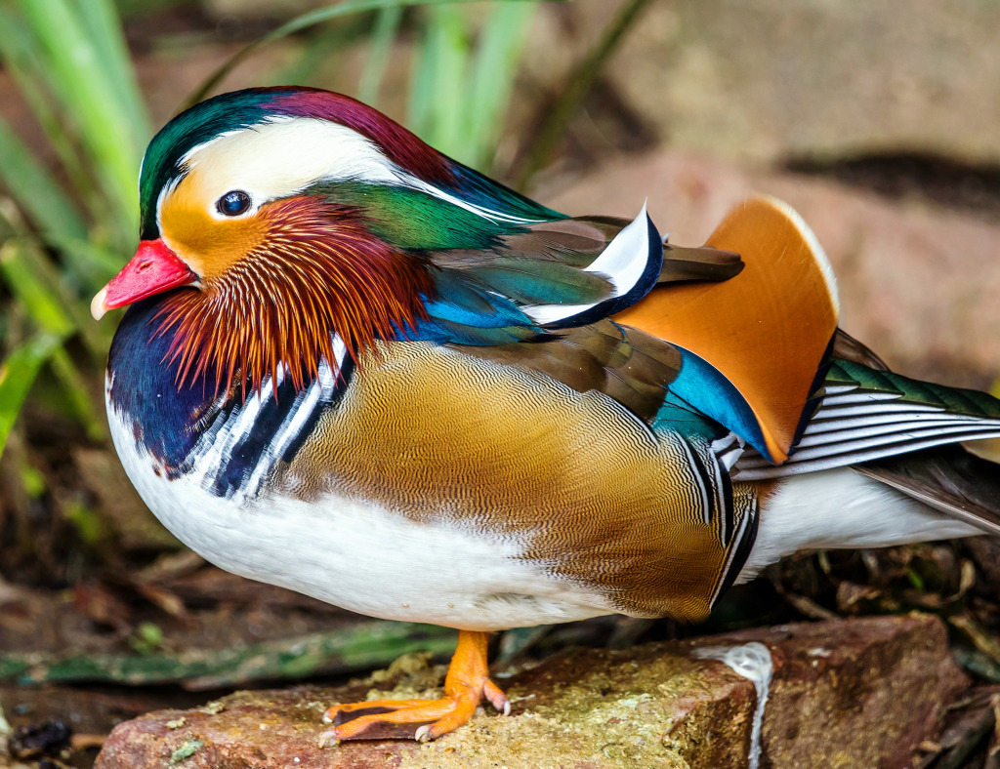

O pato-mandarim é mundialmente conhecido por sua plumagem multicolorida. Essa característica, entretanto, é predominante dos machos, que usam essa beleza e coloração para atrais as fêmeas durante o período de acasalamento. Uma curiosidade bem interessante sobre esse animal é que existe um padrão de desenho e cores que diferem o macho da fêmea. No caso dos machos, eles costumam ter o peito roxo, asas marrons, pescoço laranja, além de bico vermelho e pernas amarelas. Já as fêmeas possuem cores mais discretas e escuras, além de possuírem bico preto.
O animal é de origem asiática e pode ser encontrado com mais facilidade na China, Rússia e Japão, mas também pode ser visto em alguns outros países. Em novembro do ano passado, um pato macho se tornou atração do Central Park, em Nova York. Turistas, curiosos e até mesmo veículos de mídia internacional foram conferir a presença da ave no famoso ponto turístico norte-americano. Segundo Maria Virginia, esses animais não estão ameaçados de extinção, mas a quantidade de criadores é pequena. O pato-mandarim têm sido cada vez menos encontrado em ambientes selvagens - em virtude do tráfico de animais e do desmatamento - por isso, o governo chinês considera o Pato-Mandarim uma espécie a ser protegida.